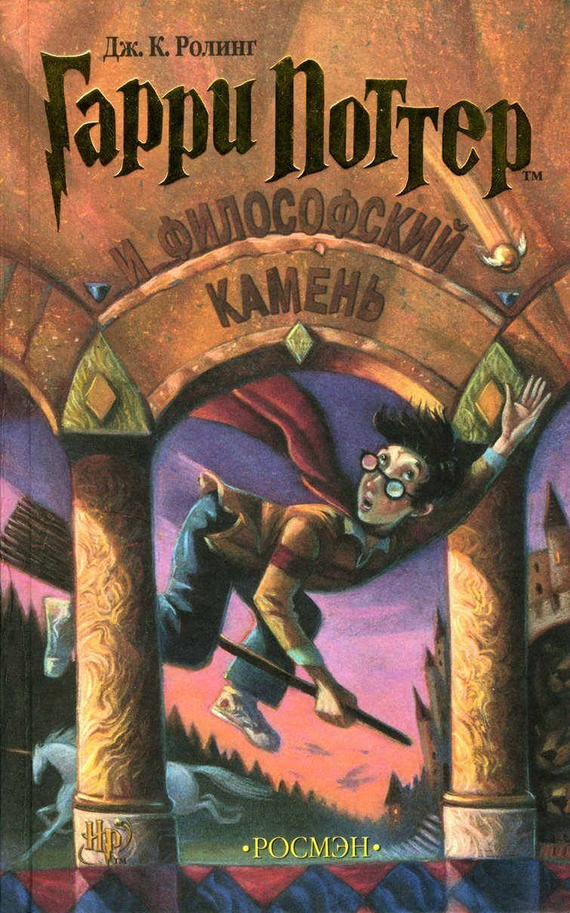

<div class="page-wrapper">
	<div class="page">
		<h1>Гарри Поттер и философский камень</h1>
		<h3>Глава 1. Мальчик, который выжил</h3>
		<div class="img-wrapper">
			
			<div class="paragraph-wrapper">
				<p>Мистер и миссис Дурсль проживали в доме номер четыре по Тисовой улице и всегда с гордостью заявляли, что они, слава богу, абсолютно нормальные люди. Уж от кого-кого, а от них никак нельзя было ожидать, чтобы они попали в какую-нибудь странную или загадочную ситуацию. Мистер и миссис Дурсль весьма неодобрительно относились к любым странностям, загадкам и прочей ерунде.
				</p><p>
				Мистер Дурсль возглавлял фирму под названием «Граннингс», которая специализировалась на производстве дрелей. Это был полный мужчина с очень пышными усами и очень короткой шеей. Что же касается миссис Дурсль, она была тощей блондинкой с шеей почти вдвое длиннее, чем положено при ее росте. Однако этот недостаток пришелся ей весьма кстати, поскольку большую часть времени миссис Дурсль следила за соседями и подслушивала их разговоры. А с такой шеей, как у нее, было очень удобно заглядывать за чужие заборы. У мистера и миссис Дурсль был маленький сын по имени Дадли, и, по их мнению, он был самым чудесным ребенком на свете.</p>
			</div>
		</div>
		
		<p>Семья Дурслей имела все, чего только можно пожелать. Но был у них и один секрет. Причем больше всего на свете они боялись, что кто-нибудь о нем узнает. Дурсли даже представить себе не могли, что с ними будет, если выплывет правда о Поттерах. </p>
	</div>
</div>